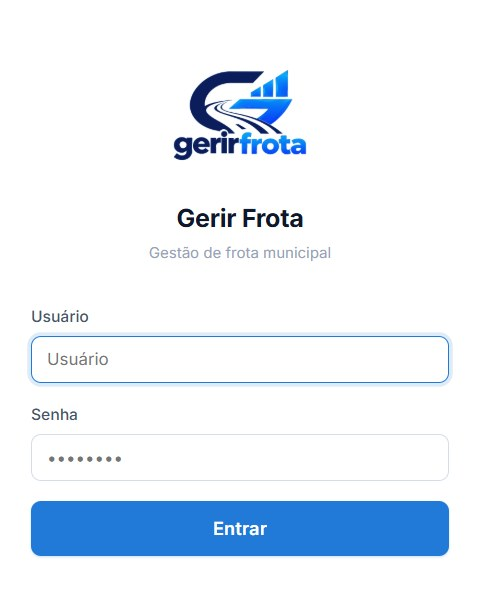

Do abastecimento à prestação de contas.
Gestão, controle e rastreabilidade da frota da administração pública municipal, em um sistema 100% web, sem instalar programas.
Prefeituras · Câmaras Municipais · Secretarias · Fundos · Autarquias
Muito além da autorização de combustível
O Gerir Frota acompanha a despesa da frota pública do momento em que o abastecimento é autorizado até a planilha enviada ao Tribunal de Contas. Acesso pelo navegador, no computador ou no celular, sem necessidade de infraestrutura local de TI.

Controle
As informações da frota em um único lugar.
Transparência
Histórico de cada abastecimento, manutenção e despesa.
Gestão contratual
Consumo e saldo acompanhados por fornecedor.
Rastreabilidade
Abastecimentos ligados às notas fiscais e aos empenhos.
Padronização
Um mesmo procedimento para autorizar, abastecer e manter.
Conformidade
Planilhas de frota prontas para o TCE-PI.
O que a gestão da frota exige
Autorizar o abastecimento é só o ponto de partida. Quem administra a frota pública também precisa responder a três perguntas.
Quanto cada secretaria consumiu?
Litros, valores e veículos por unidade administrativa.
Qual é o saldo do contrato?
O que já foi consumido e o que ainda resta por fornecedor.
A prestação de contas fecha?
A mesma base que opera a frota precisa atender ao Tribunal de Contas.
Quem opera registra uma vez, quem administra enxerga o gasto e quem fiscaliza encontra o caminho inteiro em um só lugar.
A informação é registrada uma vez e reaproveitada até o Tribunal de Contas
O que é cadastrado alimenta a operação, e o que é operado alimenta a análise e a prestação de contas.
Cadastros
- Entidade e secretarias
- Usuários e perfis
- Veículos
- Fornecedores
- Contratos
Operação
- Autorizações
- Abastecimentos
- Ordens de fornecimento
- Termos de recebimento
- Manutenções
Análise
- Painel gerencial
- Relatórios
- Saldos de contrato
- Notas fiscais e empenhos
- Planilhas para o TCE-PI
Autorização e abastecimento com QR Code
Cada abastecimento nasce de uma autorização identificada, emitida com QR Code e validada no posto no ato do abastecimento.
- Autorização com veículo, combustível, quantidade, valor estimado, fornecedor e responsável
- Registro de litros, valores e quilometragem a cada abastecimento
- Acesso individual com perfil próprio, período definido e limite de valor para autorizar despesas
- Impressão em impressora térmica ou autorização sem papel, já visível para o posto

Controle do saldo dos contratos
O sistema mostra, por fornecedor e por combustível, quanto foi contratado, quanto já foi consumido e quanto ainda está disponível. Preço por litro acompanhando o contrato.
Valor contratado
Por fornecedor e por combustível.
Consumido
Atualizado a cada abastecimento.
Saldo disponível
Visível antes da próxima autorização.
O gestor conhece o saldo antes de autorizar e consegue planejar aditivos e novas contratações com antecedência.
Saiba maisCada abastecimento ligado à nota fiscal e ao empenho
A despesa pode ser seguida do litro abastecido ao documento contábil, nesta sequência.
- 1Autorização e abastecimentoA autorização identificada dá origem ao registro do abastecimento.
- 2Ordem de fornecimentoEmitida no próprio sistema.
- 3EmpenhoVinculado aos abastecimentos correspondentes.
- 4Nota fiscalVinculada aos abastecimentos correspondentes.
- 5Termo de recebimentoEmitido no próprio sistema, registra o que foi fornecido.
Quem fiscaliza encontra o caminho inteiro da despesa em um só lugar.
Manutenções, painel e relatórios
O sistema guarda o histórico de manutenção de cada veículo, registrado a partir de uma autorização ou manualmente, e acompanhado por veículo, secretaria, oficina, status e período.
O painel reúne veículos ativos, abastecimentos, manutenções, quilômetros rodados, gastos por categoria e consumo por secretaria e por combustível. Os relatórios saem em PDF e Excel.

Planilhas direto para o TCE-PI
As planilhas de frota saem no layout do Tribunal de Contas do Estado do Piauí, a partir da mesma base usada na operação diária, sem redigitação.
Antes do envio
Controle para quem opera.
Informação para quem administra.
Transparência para quem fiscaliza.
Da demonstração ao suporte
Licença de uso, implantação, treinamento e suporte fazem parte do mesmo contrato.
- 1DemonstraçãoApresentação do sistema ao órgão interessado.
- 2Licença de usoAcesso ao sistema em regime SaaS, pelo navegador.
- 3ImplantaçãoParametrização inicial e migração dos dados cadastrais.
- 4TreinamentoCapacitação das equipes de operação e de gestão.
- 5SuporteAtendimento contínuo durante a vigência do contrato.
Quem somos
A R Soares Martins é a empresa responsável pelo Gerir Frota. Com endereço em Teresina, Piauí, atendemos órgãos e entidades municipais que precisam controlar a despesa da frota e prestar contas ao Tribunal de Contas do Estado do Piauí (TCE-PI).
Área de atuação
Gestão de frota pública municipal: autorização de abastecimento, controle de contratos, manutenções, relatórios e prestação de contas.
Quem atendemos
Prefeituras, Câmaras Municipais, Secretarias, Fundos e Autarquias.
Agende uma demonstração
Fale com a nossa equipe e conheça o Gerir Frota em funcionamento.
CEP 64055-305, Teresina, PI